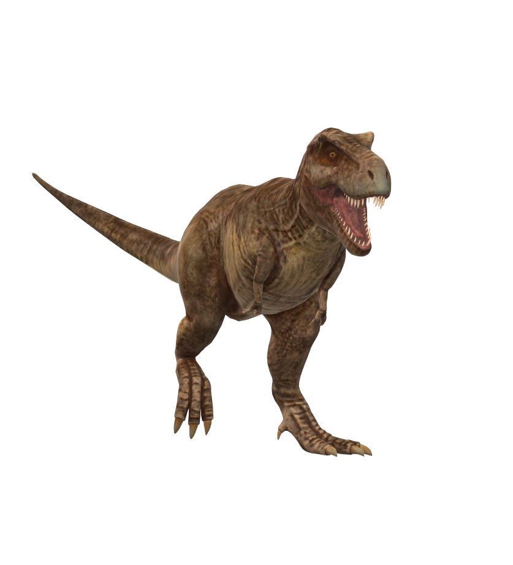

🦕 DINOMANIA-AR 🦕
BRINGING DINOSAURS TO LIFE
|  |
Tyrannosaurus RexTimeline: Cretaceous era, about 90 to 66 million years ago Habitat: humid, semi-tropical environments like swamps or forests with nearby rivers Diet: carnivorous, eats other large dinosaurs including the Triceratops (see below) Cool Fact!: The T Rex was one of the largest dinosaurs, weighing a whopping 7.5 tons |
TriceratopsTimeline: Cretaceous era, about 90 to 66 million years ago Habitat: dry, forested areas with thick vegetation Diet: herbivorous, eats shrubs and small trees, including the cycad which looks similar to a palm tree Cool Fact!: Fittingly, the name triceratops means three-horned-face in Greek! |
PterodactylTimeline: Jurassic era, 200 - 140 million years ago Habitat: swampy wetlands Diet: carnivorous, scavengers; along with a diet of insects and fish, pterodactyls would also eat dinosaurs that were already dead Cool Fact!: Technically, the pterodactyl isn't a true dinosaur. More accurately, they are pterosaurs, a type of flying reptile |
 |
VelociraptorTimeline: Cretaceous era, 90 - 66 million years ago Habitat: deserts with hot and sandy dunes Diet: carnivorous, eats plant-eating dinosaurs, reptiles, insects, and small mammals Cool Fact!: Some scientists think that the velociraptor may have had feathers because of quill knobs on velocirpator fossils. |